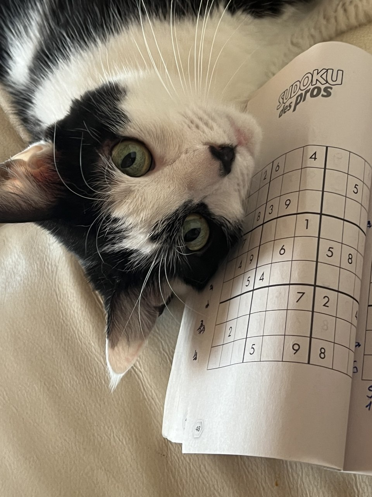

Gatto puzzolente
Questa pagina vuole apprezzare la magnifica gatta Lea. Si tratta di una micica di quasi dieci anni, ma ancora swag e piena di energia.

Vita
Trovata nei boschi di Minusio, la Lea è stata accudita fin dai suoi primi giorni con i vermi dalla cara Martina. Assieme hanno vissuto 6 anni di amore e dormite assieme; a un certo punto, però
si è dovuta trovare una nuova soluzione. È così che Lea è finita ad imparare il francese da Patoune e il tedesco-spagnolo da Killa.
Abilità della Lea
La Lea si è mostrata essere una gatta piena di risorse. Ecco qui alcune delle più lampanti:
- Caccia di tampax
- Suono di attivazione
- Distruzione di sedie in finta pelle e miei coprimaterasso
- Attacco d'amore
Love you Lea <3
I primi momenti assieme sono stati non privi di emozioni, con la scomparsa, ma ogni cosa porta le sue avventure belle e brutte ;P